"Well, master physician, come over to our camp in the fields."
Regis looked at him long and hard. "My thanks," he said finally. "But I have a better idea. I invite you to my house. My summer abode is more of a shack than a cottage, and a small one at that. You'll have no choice but to sleep under the stars. But there's a spring nearby, and inside, a hearth."
"We'll gladly take you up on your invitation."
Bathed in the moonlight, Regis's shack seemed utterly as if it could have come from a fairy-tale.
It could have been a witch's cottage.
The interior of the cabin was dark and filled with heavy, intoxicating smells from bundles of herbs and spices hanging on the walls. The only furniture was a bed, also covered in herbs, and a crooked table, covered with countless glass, earthenware and porcelain bottles. The scant light that allowed them to see it all came from a squat, hourglass-like pot-bellied stove. The stove was wrapped around with a web of glowing tubes, bent into arcs and spirals. Under one of these, was a wooden bowl, which was catching clear liquid falling from the tube.


BACK
↩
NEXT
↪
⌂
CHOOSE ANOTHER